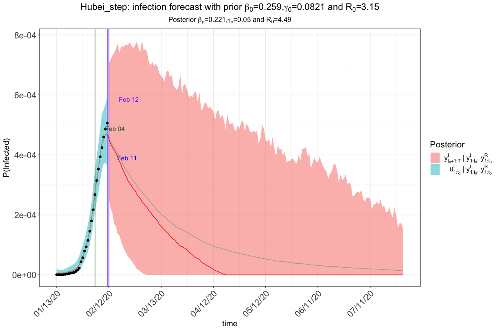
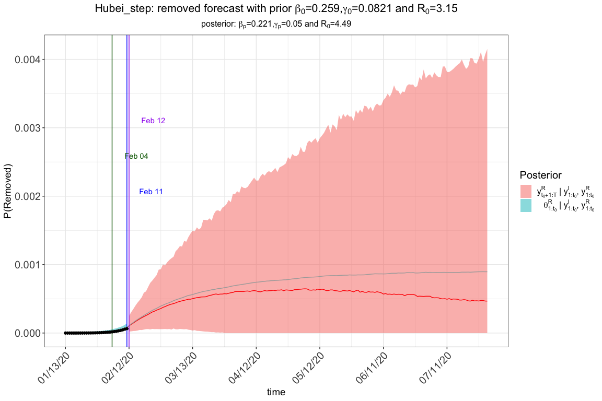
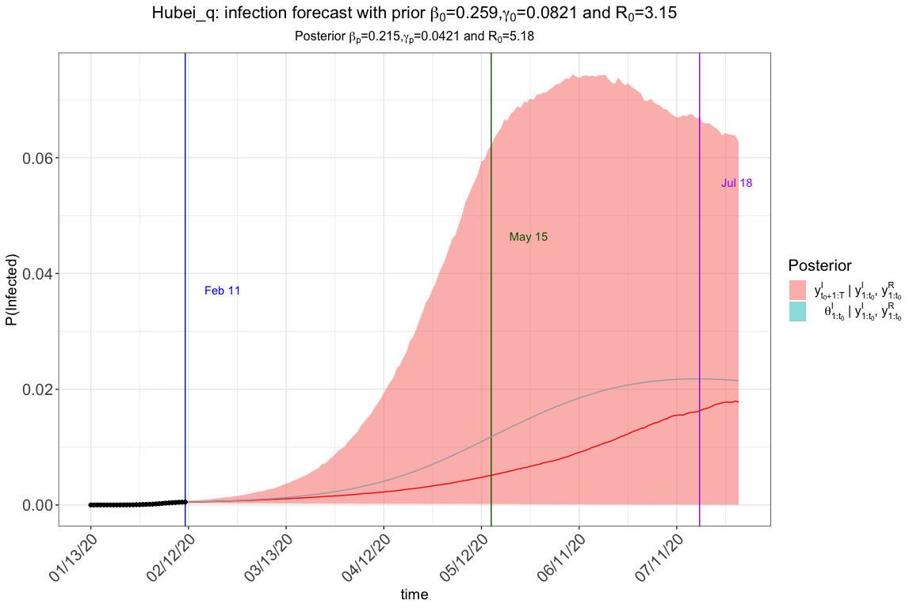

R package eSIR: extended state-space SIR epidemiological models
Song Lab 2020-02-20
Purpose
The outbreak of novel Corona Virus disease (a.k.a. COVID-19), originated in Wuhan, the capital of Hubei Province spreads quickly and affects many cities in China as well as many countries in the world. The Chinese government has enforced very stringent quarantine and inspection to prevent the worsening spread of COVID-19. Although various forms of forecast on the turning points of this epidemic within and outside Hubei Province have been published in the media, none of the prediction models has explicitly accounted for the time-varying quarantine protocols. We extended the classical SIR model for infectious disease by incorporating forms of medical isolation (in-home quarantine and hospitalization) in the underlying infectious disease dynamic system. Using the state-space model for both daily infected and hospitalized incidences and MCMC algorithms, we assess the effectiveness of quarantine protocols for confining COVID-19 spread in both Hubei Province and the other regions of China. Both predicted turning points and their credible bands may be obtained from the extended SIR under a given quarantine protocol. R software packages are also made publicly available for interested users.
The standard SIR model has three components: susceptible, infected, and removed (including the recovery and dead). In the following sections, we will introduce the other extended state-space SIR models and their implementation in the package. All the results provided are based on very short chains. Please set at least M=5e5 and nburnin=2e5 to obtain stable MCMC chains via rjags.


Preparation
To install and use this R package from Github, you will need to first install the R package devtools. Please uncomment the codes to install them. eSIR depends on three other packages, rjags (an interface to the JAGS library), chron and gtools, which could be installed with eSIR if not yet.
An error may occur if you have not yet installed JAGS-4.x.y.exe (for any x >= 0, y >=0). Windows users may download and install JAGS from here. Mac users may follow steps at casallas/8411082.
x# install.packages("devtools")# library(devtools)#for information and covariance calculation; sample size computation using Hasegawa proposal# install_github("lilywang1988/eSIR")library(eSIR) Our data are collected daily from dxy.com. Alternatively, we notice some convenient access to COVID-19 data from GuangchuangYu/nCov2019 and qingyuanzhao/2019-nCov-Data.
xxxxxxxxxx# Data of COVID-19 can be found in the following R packages: # install_github("GuangchuangYu/nCov2019")#library(nCov2019) # install_github("qingyuanzhao/2019-nCov-Data")#library(2019-nCov-Data) In Ubuntu (18.04) Linux, please first update R to a version >= 3.6. You may need to install jags package as well by sudo apt-get install jags before install devtools by install.packages("devtools").
Model 1 using tvt.eSIR(): a SIR model with a time-varying transmission rate
By introducing a time-dependent function that modifies the transmission rate , we can depict a series of time-varying changes caused by either external variations like government policies, protective measures and environment changes, or internal variations like mutations and evolutions of the pathogen.
The function can be either stepwise or exponential:
Step function reflecting the government-initiated macro isolation measures. For example
Continuous function reflecting the gradually increased community-level awareness and responsibility of quarantine or micro isolation measures. For example,

xxxxxxxxxxset.seed(20192020)library(eSIR)#> Loading required package: rjags#> Loading required package: coda#> Linked to JAGS 4.3.0#> Loaded modules: basemod,bugs#> Loading required package: scales#> Loading required package: ggplot2#> Loading required package: chron#> Loading required package: gtools# Hubei province data Jan13 -> Feb 11# cumulative number of infectedNI_complete <- c( 41,41,41,45,62,131,200,270,375,444,549, 729, 1052,1423,2714,3554,4903,5806,7153,9074,11177, 13522,16678,19665,22112,24953,27100,29631,31728,33366) RI_complete <- c(1,1,7,10,14,20,25,31,34,45,55,71,94,121,152,213, 252,345,417,561,650,811,1017,1261,1485,1917,2260, 2725,3284,3754) N=58.5e6 R <- RI_complete/N Y <- NI_complete/N- R #Jan13->Feb 11 ### Step function of pi(t) change_time <- c("01/23/2020","02/04/2020","02/08/2020") pi0<- c(1.0,0.9,0.5,0.1) res.step <-tvt.eSIR(Y,R,begin_str="01/13/2020",death_in_R = 0.4,T_fin=200, pi0=pi0,change_time=change_time,dic=T,casename="Hubei_step", save_files = T, save_mcmc=F,M=5e3,nburnin = 2e3)#> The follow-up is from 01/13/20 to 07/30/20 and the last observed date is 02/11/20.#> Running for step-function pi(t)#> Compiling model graph#> Resolving undeclared variables#> Allocating nodes#> Graph information:#> Observed stochastic nodes: 60#> Unobserved stochastic nodes: 37#> Total graph size: 1873#> #> Initializing model#> Saving 12 x 8 in image#> Saving 12 x 8 in image res.step$plot_infection
xxxxxxxxxx res.step$plot_removed
xxxxxxxxxx res.step$dic_val#> Mean deviance: -1262 #> penalty 37.25 #> Penalized deviance: -1224 ### continuous exponential function of pi(t) res.exp <- tvt.eSIR(Y,R,begin_str="01/13/2020",death_in_R = 0.4, T_fin=200,exponential=TRUE,dic=F,lambda0=0.05, casename="Hubei_exp",save_files = F,save_mcmc=F, M=5e3,nburnin = 2e3)#> The follow-up is from 01/13/20 to 07/30/20 and the last observed date is 02/11/20.#> Running for exponential-function pi(t)#> Compiling model graph#> Resolving undeclared variables#> Allocating nodes#> Graph information:#> Observed stochastic nodes: 60#> Unobserved stochastic nodes: 37#> Total graph size: 1873#> #> Initializing model res.exp$plot_infection
xxxxxxxxxx #res.exp$plot_removed ### without pi(t), the standard state-space SIR model without intervention res.nopi <- tvt.eSIR(Y,R,begin_str="01/13/2020",death_in_R = 0.4, T_fin=200,casename="Hubei_nopi",save_files = F, M=5e3,nburnin = 2e3)#> The follow-up is from 01/13/20 to 07/30/20 and the last observed date is 02/11/20.#> Running without pi(t)#> Compiling model graph#> Resolving undeclared variables#> Allocating nodes#> Graph information:#> Observed stochastic nodes: 60#> Unobserved stochastic nodes: 37#> Total graph size: 1873#> #> Initializing model res.nopi$plot_infection
xxxxxxxxxx #res.nopi$plot_removedModel 2 using qh.eSIR(): SIR with time-varying quarantine, which follows a Dirac Delta function
By introducing a vector of phi and its corresponding changing points change_time, we introduced a quarantine process that is dependent on a dirac delta function ϕt ∈ [0, 1]. In other words, only at time points defined by change_time, we have certain proportions of the at-risk (susceptible) subjects moved to the quarantine stage. The difference of this model than the previous time-varying transmission one is that we do not allow the transmission rate to change, but only let the proportion of susceptible subjects decrease. 

xxxxxxxxxxset.seed(20192020)NI_complete <- c( 41,41,41,45,62,131,200,270,375,444,549, 729, 1052,1423,2714,3554,4903,5806,7153,9074,11177, 13522,16678,19665,22112,24953,27100,29631,31728,33366) RI_complete <- c(1,1,7,10,14,20,25,31,34,45,55,71,94,121,152,213, 252,345,417,561,650,811,1017,1261,1485,1917,2260, 2725,3284,3754) N=58.5e6 R <- RI_complete/N Y <- NI_complete/N- R #Jan13->Feb 11 change_time <- c("01/23/2020","02/04/2020","02/08/2020") phi0 <- c(0.1,0.4,0.4) res.q <- qh.eSIR (Y,R,begin_str="01/13/2020",death_in_R = 0.4, phi0=phi0,change_time=change_time, casename="Hubei_q",save_files = T,save_mcmc = F, M=5e3,nburnin = 2e3)#> The follow-up is from 01/13/20 to 07/30/20 and the last observed date is 02/11/20.#> Running for qh.eSIR#> Compiling model graph#> Resolving undeclared variables#> Allocating nodes#> Graph information:#> Observed stochastic nodes: 60#> Unobserved stochastic nodes: 37#> Total graph size: 2676#> #> Initializing model#> Saving 12 x 8 in image#> Saving 12 x 8 in image res.q$plot_infection
xxxxxxxxxx #res.q$plot_removed #res.noq <- qh.eSIR (Y,R,begin_str="01/13/2020",death_in_R = 0.4, # T_fin=200,casename="Hubei_noq", # M=5e3,nburnin = 2e3) #res.noq$plot_infectionYou will obtain the following plot in addition to the traceplots and summary table if you set save_file=T in qh.eSIR. The blue vertical line denotes the beginning date, and the other three gray lines denote the three change points.

Outputs and summary table
To save all the plots (including trace plots) and summary tables, please set save_files=T, and if possible, provide a location by setting file_add="YOUR/FAVORITE/FOLDER". Otherwise, the traceplots and other intermediate plots will not be saved, but you can still retrieve the forecast plots and summary table based on the return list, e.g., using res.step$forecast_infection and res.step$out_table. Moreover, if you are interested in plotting the figures on your own, you may set save_mcmc=T so that all the MCMC draws will be saved in a .RData file too.
For details, please explore our package directly. We have .rd files established, please use help(tvt.eSIR) or ?qh.eSIR to find them.
References
- Osthus, D., Hickmann, K. S., Caragea, P. C., Higdon, D., & Del Valle, S. Y. (2017). Forecasting seasonal influenza with a state-space SIR model. The annals of applied statistics, 11(1), 202.
- Mkhatshwa, T., & Mummert, A. (2010). Modeling super-spreading events for infectious diseases: case study SARS. arXiv preprint arXiv:1007.0908.
Shield: 
This work is licensed under a Creative Commons Attribution 4.0 International License.